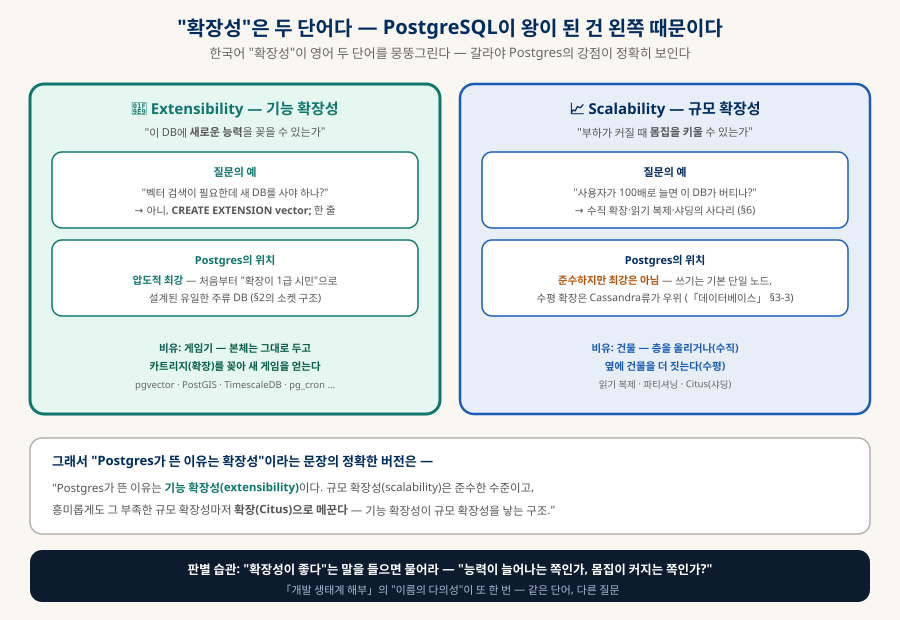
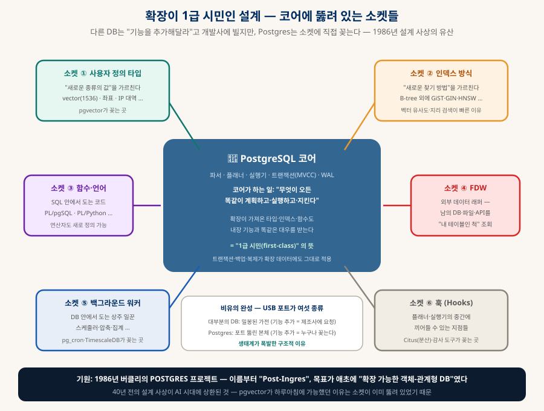
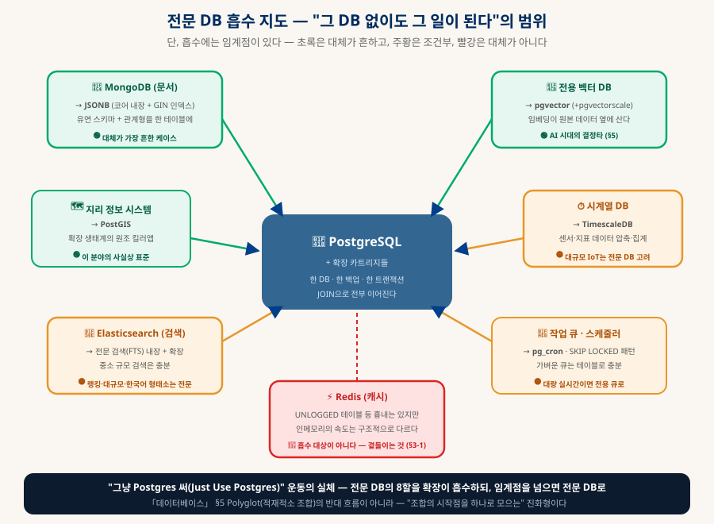

PostgreSQL 해부
"확장성"이 왕을 만들었다 — 단, 그 확장성은 당신이 아는 그 확장성이 아닐 수 있다
"요즘 DB는 Postgres, 이유는 확장성" — 맞는 말이다. 그런데 한국어 "확장성"은 영어 두 단어(extensibility / scalability)를 뭉뚱그린다. Postgres를 왕좌에 올린 것은 몸집이 아니라 소켓 — 40년 전 설계 사상이 AI 시대에 상환되는 이야기를, 카트리지가 꽂히는 그림과 함께 해부한다.
0. 한눈에 보기 — 숫자와 명제
얼마나 쓰이는지부터, 왜 그런지까지
개발자 사용률 1위 (개략)
연속 1위
점수 성장 폭 최대
서비스가 전부 PG 기반
0-1. 이 문서의 개념 그래프 — 노드를 눌러 관계를 따라가기 (인터랙티브)
이 문서에 나오는 개념들을 노드로, 이름 붙은 관계를 선으로 그렸다. 노드를 누르면 이웃만 밝아지고 관계 이름이 선 위에 나타나며, 아래 칸에 한 줄 정의와 해당 절로 가는 링크가 뜬다. 끌어서 옮길 수도 있다.
1. "확장성"은 두 단어다 — 능력인가, 몸집인가
이 구분 하나로 Postgres에 대한 통념이 정확해진다

| 🧩 Extensibility (기능 확장성) | 📈 Scalability (규모 확장성) | |
|---|---|---|
| 질문 | "새 능력을 꽂을 수 있나?" | "부하가 커지면 버티나?" |
| Postgres | 압도적 최강 — 주류 DB 중 유일하게 확장이 1급 시민(§2) | 준수 — 쓰기는 기본 단일 노드, 수평 확장은 Cassandra류가 우위(「데이터베이스」 §3-3) |
| 비유 | 게임기에 카트리지 꽂기 | 건물 층수 올리기 / 옆에 더 짓기 |
2. 확장이 1급 시민인 설계 — 코어에 뚫린 소켓들
1986년의 설계 사상이 40년 뒤에 상환되다
기원부터가 특별하다. 1986년 버클리의 마이클 스톤브레이커가 시작한 POSTGRES 프로젝트는 이름부터 "Post-Ingres"(이전 세대 DB의 다음) — 목표 자체가 "사용자가 타입과 연산을 추가할 수 있는 객체-관계형 DB"였다. 다른 DB들이 "빠른 저장·조회"를 목표로 태어날 때, Postgres는 "확장 가능함" 자체를 목표로 태어난 것이다. 그 결과가 코어에 뚫린 여섯 개의 소켓이다:

2-1. 카트리지 장착을 눈으로 — CREATE EXTENSION 한 줄의 의미 (동적)
3. 확장 생태계 — 전문 DB 흡수 지도
"그 DB 없이도 그 일이 된다" — 단, 임계점이 있다

| 전문 DB의 일 | Postgres의 답 | 임계점 — 언제 전문 DB로 |
|---|---|---|
| 문서형 (MongoDB) | JSONB (코어 내장 + GIN 인덱스) | 🟢 대체가 가장 흔하다 — 「데이터베이스」 §9-C의 "Mongo 가기 전에 JSONB" 그대로 |
| 벡터 검색 | pgvector (+ pgvectorscale·pgai) | 🟢 임베딩이 원본 옆에 살아 JOIN 가능 — 수백만~수천만 벡터급에서 전용 DB 검토 (개략) |
| 지리 정보 (GIS) | PostGIS | 🟢 이 분야의 사실상 표준 — 확장 생태계의 원조 킬러앱 |
| 시계열 (센서·지표) | TimescaleDB | 🟡 대규모 IoT 인입이면 전문 시계열 DB 고려 |
| 전문 검색 (Elasticsearch) | FTS 내장 (tsvector) + 확장 | 🟡 중소 규모는 충분 — 정교한 랭킹·대규모·한국어 형태소 분석은 전문 엔진 |
| 작업 큐·스케줄 | pg_cron · SKIP LOCKED 패턴 | 🟡 가벼운 큐는 테이블로 — 대량 실시간 스트림이면 전용 큐(Kafka류) |
| 그래프 질의 (Neo4j) | Apache AGE — openCypher를 PG 안에서 | 🟡 가벼운 관계 질의는 충분 — 그래프가 주인공이 되면(대규모·알고리즘·시각화) Neo4j로 (「온톨로지와 지식 그래프」). Neo4j 자체는 PG 확장이 아니라 별도 DB다 |
| 외부 데이터 연결 | FDW — 남의 DB·CSV·API를 "내 테이블인 척" | — (연합 조회 도구이지 대체가 아님) |
| 분산·샤딩 | Citus — 스케일마저 확장으로(§1) | 🟡 진짜 필요해진 다음에 (§6) |
| 캐시 (Redis) | 흉내는 있으나 — | 🔴 흡수 대상이 아니다 — 인메모리의 속도는 구조가 다르다. 「데이터베이스」 §9의 "곁들이는 것" |
핵심 구분: 임베딩 모델 ≠ 생성 LLM. 임베딩 모델은 작고 싸며(로컬에서 공짜 가능 — 「로컬 LLM 에이전트」의 스택), 검색까지만 쓸 거면 생성 LLM은 아예 불필요하다. 답변 문장까지 원할 때(RAG) 비로소 생성 모델이 붙는다 — "AI처럼 검색"은 생성 LLM 없이 되지만, "아무 모델도 없이"는 안 된다.
4. "그냥 Postgres 써" 운동 — Polyglot의 진화형
DB 동물원을 한 마리 코끼리로
2010년대의 유행은 Polyglot Persistence(「데이터베이스」 §5) — "일마다 최적의 전문 DB를 조합하라"였다. 그런데 실제로 조합해본 팀들이 청구서를 받았다: DB가 5개면 백업 전략도 5개, 장애 지점도 5개, 버전 업그레이드도 5번, 배워야 할 질의 언어도 5개, 그리고 DB 사이의 데이터 동기화라는 지옥이 덤이다. 그 반동으로 나온 흐름이 "Just Use Postgres" — 전문 DB의 8할을 확장으로 흡수하고, 시스템 수를 1로 유지하자는 운동이다.
| Polyglot (2010년대) | Just Use Postgres (현재) | |
|---|---|---|
| 철학 | 일마다 최적 도구 | 충분히 좋은 하나 + 카트리지 |
| 시스템 수 | N개 (백업·장애·학습도 N배) | 1개 — 임계점 넘은 것만 분리 |
| 데이터 연결 | DB 간 동기화 파이프라인 (지옥) | JOIN 한 줄 — 벡터·JSON·지리·관계형이 한 트랜잭션 |
| 약점 | 운영 복잡도 폭발 | 각 분야 최강은 아님 — 임계점 판단이 필요(§3) |
5. 왜 MySQL을 제쳤나 — 다섯 요인
10년 전엔 MySQL이 기본값이었다 — 무엇이 뒤집었나
2000~2010년대의 웹은 MySQL의 시대였다(LAMP 스택의 M — 워드프레스·페이스북 초기가 다 MySQL). Postgres는 "기능은 많지만 무겁고 학구적인 DB"라는 이미지였고. 역전의 요인을 다섯으로 추리면:
| 요인 | 내용 |
|---|---|
| ① 기능 선행 | JSONB·윈도우 함수·CTE 같은 "개발자가 원하는 것"을 수년씩 먼저 제공 — MySQL이 따라올 때쯤 Postgres는 다음 것을 내놓았다 |
| ② 거버넌스 — 주인 없는 DB | MySQL은 2010년 오라클에 인수되며 미래 불확실성이 생겼고(그래서 MariaDB가 갈라져 나옴), Postgres는 어느 회사도 소유하지 않는 순수 커뮤니티 — 기업들이 안심하고 베팅할 수 있었다. 「오픈소스 라이선스」의 언어로: 라이선스도 관대(BSD류)하고 주인도 없다 |
| ③ 신생 클라우드의 선택 | Supabase("Firebase처럼 편하게, 제대로 된 SQL로")·Neon 등 새 세대 서비스가 전부 Postgres를 기반으로 선택 — 신규 프로젝트의 기본값 지위를 가져갔다 (「데이터베이스」 §7의 그 이야기) |
| ④ AI 시대의 결정타 | pgvector — RAG 붐이 왔을 때 "이미 쓰는 DB에 확장 한 줄"로 벡터 검색이 됐다. 새 벡터 DB를 배울 필요가 없었던 것. 한 서비스 보고로는 신규 DB의 80%를 사람이 아닌 AI 에이전트가 생성한다는 시대에(개략), 에이전트들의 기본 선택지도 Postgres다 |
| ⑤ 표준 준수·엄격함 | SQL 표준에 충실하고 데이터를 엄격히 다룬다 — MySQL의 관대한 기본값(조용한 데이터 절삭 등)에 데인 개발자들이 넘어왔다 |
6. 정직한 약점 — 그리고 스케일의 사다리
왕에게도 아킬레스건이 있다 — 알고 쓰면 문제없는 것들
| 약점 | 내용 | 실무 대응 |
|---|---|---|
| 쓰기의 수평 확장 | 쓰기는 기본적으로 한 대가 받는다 — Cassandra처럼 아무 노드나 쓰는 구조가 아니다 | 대부분은 단일 노드 수직 확장으로 매우 멀리 간다 — 진짜 한계에서 Citus·샤딩 |
| 연결이 비싸다 | 연결마다 프로세스를 만드는 모델 — 수천 개의 동시 연결에 약하다 | 연결 풀러(pgbouncer)가 표준 처방 — Supabase는 내장돼 있다 |
| VACUUM | MVCC(버전 관리)의 대가로 죽은 행이 쌓여 청소가 필요 — 방치하면 비대해진다 | autovacuum이 기본으로 돌지만, 대량 갱신 워크로드에선 튜닝 대상 |
| 복제 지연 | 읽기 복제본은 원본보다 약간 늦다 — "방금 쓴 걸 바로 읽기"에서 헛읽기 가능 | 중요한 읽기는 원본으로 — 코드에서 읽기 경로를 구분 |
스케일의 사다리는 「데이터베이스」 §2·§9-C에서 세운 원칙 그대로다 — ① 인덱스·쿼리 튜닝 → ② 캐시(Redis 곁들이기) → ③ 읽기 복제 → ④ 파티셔닝 → ⑤ Citus·샤딩. 요점은 대부분의 서비스가 ①~③에서 끝난다는 것 — 사다리 위 칸을 미리 오르는 것이 「데이터베이스」 §9-E의 착각 ①("처음부터 최고로")이다.
7. 실전 — 내 스택에서 이 문서는 무슨 뜻인가
Supabase 사용자는 이미 이 문서의 세계에 산다
| 이 문서의 개념 | 내 스택에서의 실체 |
|---|---|
| Postgres 본체 | Supabase 프로젝트가 곧 Postgres다 — 「데이터베이스」 §7: "Supabase를 쓴다면 이미 Postgres 위에 서 있는 것" |
| 확장 켜기 | Supabase 대시보드 → Database → Extensions에서 토글 클릭 — pgvector·PostGIS·pg_cron이 목록에 이미 있다 |
| pgvector 실전 | 「로컬 LLM 에이전트」의 RAG, 「온톨로지와 지식 그래프」의 벡터 색인이 정확히 이 확장 위에 선다 |
| JSONB 실전 | "구조가 자주 바뀌는 설정값" — Mongo 없이 한 컬럼으로 (「데이터베이스」 §9-C) |
| pg_cron 실전 | "매일 새벽 통계 집계" 같은 배치 — 서버 없이 DB 안에서 |
-- 벡터 검색 능력 획득 (RAG·시맨틱 검색) CREATE EXTENSION IF NOT EXISTS vector; -- 문서형 능력은 이미 내장 — 그냥 쓴다 CREATE TABLE articles (id bigint, meta jsonb, embedding vector(1536)); -- 관계형 + 문서형 + 벡터가 한 테이블, 한 트랜잭션, 한 백업 SELECT * FROM articles ORDER BY embedding <=> '[질문 임베딩]' LIMIT 5;
8. 함께 읽기
이 문서에서 갈라지는 길들
| 주제 | 문서 |
|---|---|
| DB 전체 지형 — 이 문서의 모(母) 문서 | 「데이터베이스 완전 정리」 §1(왕좌)·§5(Polyglot)·§7(Supabase)·§8·§9 |
| pgvector가 실제로 일하는 곳 | 「로컬 LLM 에이전트」(RAG) · 「온톨로지와 지식 그래프」(벡터 색인·GraphRAG) |
| Supabase 위의 SaaS | 「SaaS 해부」 — RLS·멀티테넌시도 Postgres 기능이다 |
| 라이선스·거버넌스 관점 | 「오픈소스 라이선스와 바이브코딩」 — 주인 없는 DB의 힘 |
| "확장 가능한 구조가 이긴다"의 다른 사례 | 「개발 생태계 해부」 §6 — 도구 사슬의 통합 |